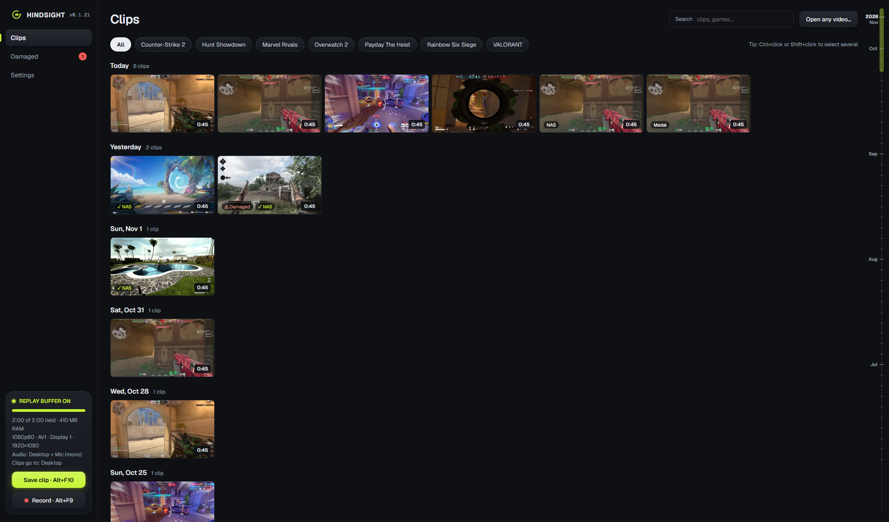
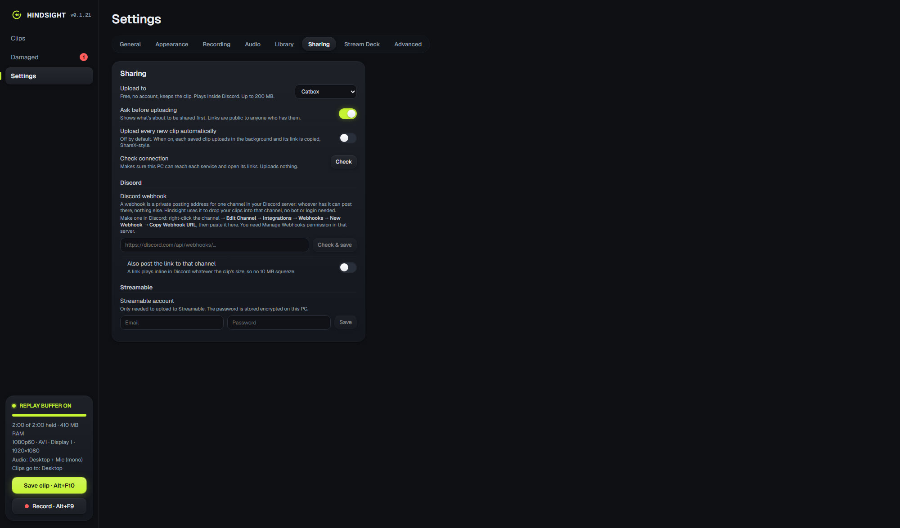
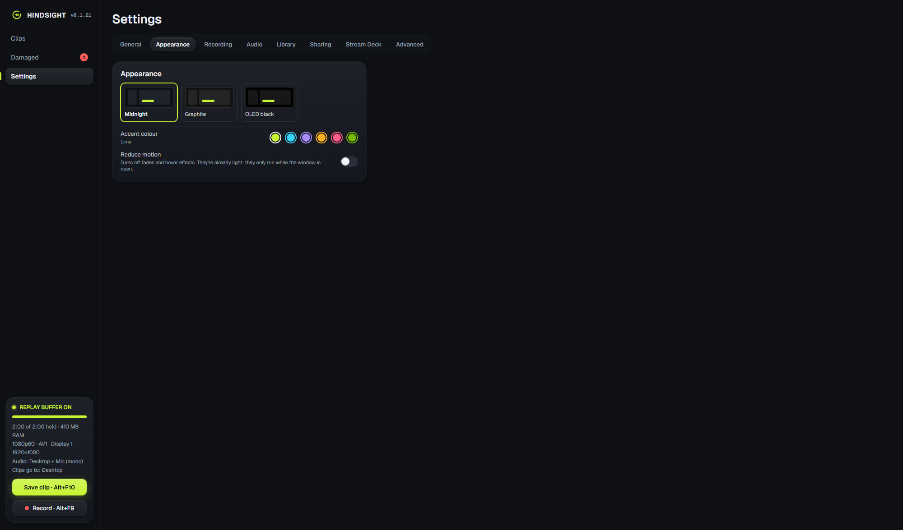

The game clipper that stays out of your way.
An always-on replay buffer on your NVIDIA GPU, a frame-exact editor, Discord on its own audio track, montages in a few clicks, and your whole library on your NAS. No account, no watermark, no ads.
About 3% of one CPU core at 1080p60. The installer isn't code-signed yet: if SmartScreen warns, click More info → Run anyway.

Everything after the moment, done right.
Press a key when something good happens. Hindsight keeps the last minutes ready in memory, saves them in under a second, and gives you everything to trim, fix, share and show off.
Light on your game
Encodes on the GPU's own NVENC chip, about 2.5 ms a frame. The buffer lives in RAM, so no constant SSD writes, and saving a 2-minute clip takes under a second.
Discord on its own track
Game, mic and Discord are three separate tracks, picked out per app by Windows. Mute your friends and keep the game, or the other way round.
Frame-exact editor
Trims cut on the exact frame and copy the rest untouched, so they're instant and lossless. Waveforms per track, mute stretches, change volumes, export as MP3.
Links that play in Discord
One click uploads to Catbox, Litterbox, Streamable or a Discord channel, converted so it plays inline for everyone. No Nitro needed.
Montages in a few clicks
Pick a length and which clips (random, a date range, edited or not), then fine-tune on a Premiere-style timeline with your own song under it.
Your NAS, built in
Every clip is copied to your NAS once you're out of game and checked byte for byte. Free up space on your PC and keep watching every clip, here or on your phone.
Heals damaged clips
Finds clips that won't play properly (a common NVIDIA and OBS problem after a crash) and cuts them down to their good part, after you've watched what's kept.
On this day
"1 year ago today": clips from this date in earlier years, at the top of your library, ready to watch straight through.
One library for every recorder
Clips from Medal, OBS, NVIDIA, Ascent, AMD, Xbox Game Bar and more, grouped by game with their logos. Duplicates and misspelled folders are spotted for you.
Measures itself
A built-in performance test turns OBS, NVIDIA and Medal on and off and measures what each costs in your game, on your PC.
Stream Deck and hotkeys
Save, record, pause and open from a Stream Deck plugin, hotkeys or the tray. The right encoder is picked for your GPU automatically.
Made with its testers
It's in beta. A diagnostics report (with your name and paths left out) makes bugs quick to fix, and feature requests go straight on GitHub.



What sets Hindsight apart.
The big recorders are good at recording. Hindsight is built for everything after: keeping clips safe, finding them again, fixing them and sharing them.
| Hindsight | Medal | NVIDIA App | OBS Studio | |
|---|---|---|---|---|
| Free and open source | ✓ Free, open source | Free, closed source | Free, closed source | ✓ Free, open source |
| Works without an account | ✓ | Sign-in needed | ✓ | ✓ |
| Clip library with an editor | ✓ Frame-exact, lossless | ✓ | Basic | None (files only) |
| Discord on its own audio track | ✓ Automatic | — | — | With manual setup |
| Copies clips to your own NAS | ✓ Checked byte for byte | Its own cloud | — | — |
| Finds and heals damaged clips | ✓ | — | — | — |
| Measures its own cost in your game | ✓ Against the others | — | — | — |
Based on each app's public features as of November 2026; "—" means we couldn't find it. Spotted something out of date? Tell us and we'll fix it.
Every clip, safe at home. Watch them anywhere in the house.
- Clips save to your PC first (instant, works offline), then copy to the NAS once you've closed your game.
- Each copy is read back from the NAS and compared byte for byte before it counts. Freed-up copies go to the Recycle Bin.
- The Hindsight Server app runs on TrueNAS (or any Docker host): your library in the browser, on any phone or PC at home.
- Share links, montages and "On this day" right from the NAS page, and storage per game at a glance.
Questions
Do I need an NVIDIA graphics card?
Yes, for now: Hindsight records on NVIDIA's video encoder (NVENC), GTX 10-series or newer. It picks the best format your card has by itself: AV1 on an RTX 40 or 50 series, HEVC or H.264 on older cards.
Is it really free? What's the catch?
It's free and open source, with no account, ads or watermark. Your clips stay on your PC (and your NAS, if you add one). Nothing is uploaded unless you press Share.
Windows says it "protected my PC". Is it safe?
The installer isn't code-signed yet, so SmartScreen doesn't recognise it. Click More info → Run anyway. The source code is on GitHub for anyone to check.
Will it slow my game down?
Very little: about 3% of one CPU core at 1080p60, with encoding on the GPU's dedicated chip. Background jobs (NAS copying, thumbnails, damage checks) wait until you're out of game. You can measure it yourself with the built-in performance test.
Can I bring my clips from Medal, NVIDIA or OBS?
Yes. Hindsight finds their folders, shows their clips in your library by game, and can move them into its own folders (with undo).
Something's broken, or I have an idea.
Run Settings → About → Run diagnostics and attach the file to a bug report. Ideas go in a feature request.
Never miss the moment again.
Free for Windows 10 and 11 with an NVIDIA GPU. It updates itself.
⬇ Download Hindsight